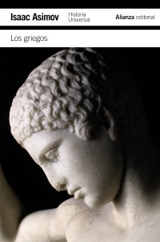

Los griegos
Reseña por Jorge I. Zuluaga

Ver reseña en GoodReads (necesita cuenta)
A la fecha de escritura de esta reseña he leído solo dos de los libros de la (pseudo) colección de historia universal de Asimov (el otro es "Los egipcios") y sigo sorprendiéndome de la capacidad de Asimov para armar un texto entretenido, erudito pero asequible y capaz de cubrir períodos de tiempo extremadamente largos en el espacio de solo unas 400 páginas.
La historia de los "antiguos" griegos, o mejor aún, de los helenos, como aprendí que debemos llamar a la multitud de pueblos que, compartiendo la lengua griega (y sus variantes), vivieron alrededor del mar Egeo, el mar Negro, el Ática, el Peloponeso, el sur de la península itálica, Sicilia, el norte de África y las islas de Creta y Chipre, en el período comprendido entre el 1300 a.e.c. y el 800 e.c., es, simplemente, ¡fascinante!
Pero no precisamente lo que uno espera.
La primera sorpresa que se lleva uno al hacer este recorrido de casi 2000 años es encontrarse con pueblos que, más que brillar por la cultura, la escritura, las artes o el pensamiento, lo hicieron por su poder militar.
Descubrir este hecho (que ya venía observando en otras lecturas, en especial en novelas históricas del período romano y de la era dorada de Atenas) es un poco decepcionante.
Yo, que ya me había convencido de que los helenos salvaron de la brutalidad a la antigüedad a través del pensamiento y la filosofía, quedé completamente decepcionado al descubrir que, en su tiempo, decir ateniense, espartano o tebano era básicamente el equivalente a decir militar, mercenario o guerrero. La visión romántica que algunos como yo (bastante ignorantes de la historia) sostenemos de los helenos como personajes entogados que caminan por las calles o se reúnen en el ágora para discutir la estructura del universo o de las leyes es solo una de las puntas del iceberg griego.
Como siempre, el libro está lleno de datos curiosos; se nota que a Asimov le encantaban. Los datos sobre el origen de algunas palabras muy usadas son maravillosos. Por ejemplo, "hoplita" viene de una palabra que en griego significaba "arma". "Pirámide" es una palabra griega que se deriva del "pimar" egipcio, el nombre que los antiguos habitantes del país de las dos tierras daban a las tumbas de sus gobernantes. "Lacónico" viene de "Laconia", la región en la que habitaban los espartanos, que se caracterizaban precisamente por esa actitud. "Tirano" viene de la voz griega "tyrannos", que solo significaba "amo". La tragedia comenzó con las "tragoideas", las canciones de los machos cabríos, en un festival dedicado a Dioniso en el que desfilaban sátiros.
Como es obvio, también por las páginas del libro de Asimov desfilan los grandes pensadores que dio la cultura helénica: desde Zenón, inventor de la dialéctica (nada más que el arte mismo de construir argumentos y de razonar para descubrir la verdad); Eudoxio, el verdadero padre de las demostraciones geométricas que luego Euclides compiló en su inmortal libro "Los elementos"; Aristóteles, el macedonio (¡una sorpresa para mí!), que cambió la historia con su pluma y sus enseñanzas a Alejandro; Diógenes el cínico (que viene de la palabra griega "kyon", que significa perro), que vivía como un pordiosero, defecaba y se masturbaba en público y fue el único capaz de decirle a Alejandro el Macedonio que no le tapara el sol; hasta llegar al gran Arquímedes, considerado por Asimov (y por muchos) el más grande científico de la antigüedad, que ayudó a defender a Siracusa de los romanos y murió por la espada de un imbécil e impaciente legionario. Y muchos, muchos más.
No le pongo 5 estrellas porque la historia de los griegos es una larga colección de conflictos entre ciudades-estado durante más de 12 siglos, por la que desfila una infinidad de nombres de generales, demagogos y tiranos, punteada aquí o allá por los más grandes pensadores que ha dado la humanidad, pero que aun así puede aburrir sin una motivación o un contexto.
Mi motivación particular fue comprender el tiempo en el que se desarrollan las novelas de Marcos Chicot, para las que considero este libro un indispensable complemento.
¡A por el libro de El Cercano Oriente!